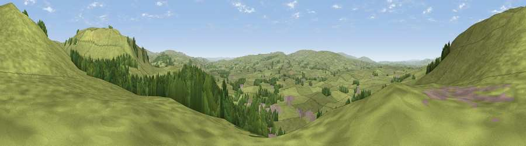

Viewpoint near Clapham
#16187 in England · top 42% of its area beats it · near ClaphamThe view, rendered

A 360° render of this exact spot computed from the terrain model, tree cover and land cover — summer colours, afternoon light, calibrated against photographs of famous viewpoints. Real trees, hedges and buildings will differ in detail.
The panorama
Grey silhouette: terrain skyline in each direction (720 bearings, Earth curvature and refraction included). Dashed green: skyline with trees (+15 m) and buildings (+8 m) as obstacles. Blue strip: how far the ground is visible on each bearing.
Where the view opens
Wedge length = distance to the farthest visible ground on that bearing (vegetation-aware). Rings at 10, 25 and 50 km.
What fills the view
80% grassland · 17% woodland · 3% built-up
Angular shares of the visible panorama (visual magnitude), not map area. Landscape diversity 0.26 (0–1 Shannon).
Key numbers
More beautiful places nearby
The staircase of upgrades: each row has a higher view potential than everything closer. Driving times are estimates from straight-line distance, calibrated against real road routing — check an actual route before setting out.
| Place | Direction | Drive | Score |
|---|---|---|---|
| Viewpoint near Austwick | E · 2 km | ~4 min | 67.7 |
| Viewpoint near Austwick | ENE · 2 km | ~5 min | 71.8 |
| Viewpoint near Clapham | NW · 3 km | ~7 min | 74.2 |
| Little Ingleborough | N · 4 km | ~8 min | 78.8 |
| Viewpoint near Ingleton | N · 5 km | ~10 min | 79.5 |
| Whernside | N · 12 km | ~22 min | 79.9 |
| Warton Crag | W · 25 km | ~41 min | 83.2 |
| Viewpoint near Grange-over-Sands | WNW · 36 km | ~54 min | 83.4 |
54.12454, -2.39282 · source: screening · position refined by local search. Computed location — check access rights before visiting.